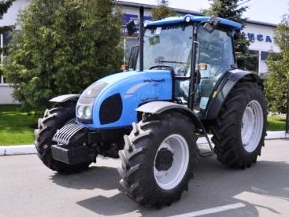

Landini Powerfarm 110

Landini Powerfarm 110 – це потужний представник лінійки універсальних тракторів Landini, який поєднує в собі італійський дизайн та перевірену часом механічну надійність. Завдяки високому крутному моменту та простоті конструкції, двигун демонструє стабільну роботу під навантаженням і є невибагливим до умов експлуатації.
Ця модель орієнтована на фермерів, яким потрібна продуктивна машина без надлишку складної електроніки. Трактор зазвичай комплектується механічною трансмісією Speed Four (з механічним реверсом), що забезпечує широкий діапазон робочих швидкостей. Кабіна Total View вирізняється панорамним оглядом на 360 градусів та ефективною системою кондиціювання, а міцна гідравлічна система вантажопідйомністю до 4350 кг дозволяє впевнено працювати з важкими навісними агрегатами.
| Характеристика | Значення |
|---|---|
| Клас тяги | 1.4 |
| Тип ходової частини | колісний |
| Колісна формула | 4х4 |
| Тип рами | жорстка конструкція |
| Основне призначення | енергоємні польові роботи, догляд за посівами, транспортні операції |
| Параметр | Значення |
|---|---|
| Модель | Perkins 1104D-44TA (Tier 3) |
| Тип двигуна | 4-циліндровий, дизельний, з турбонаддувом та інтеркулером |
| Спосіб охолодження | рідинне |
| Розташування циліндрів | рядне, вертикальне |
| Робочий об’єм | 4,4 л (4400 см³) |
| Номінальна потужність | 74,9 кВт (102,0 к.с.) |
| Максимальний крутний момент | 416 Н·м (при 1400 об/хв) |
| Номінальні оберти | 2200 об/хв |
| Очищення вихлопних газів | внутрішня рециркуляція (без AdBlue/DPF) |
| Питома витрата (оптимальна) | 218 г/кВт·год |
| Параметр | Значення |
|---|---|
| Тип КПП | механічна синхронізована (Speed Four) |
| Кількість передач | 12 вперед / 12 назад (опція з ходозменшувачем — 24/12) |
| Діапазон швидкості вперед | 1,5 – 40,0 км/год |
| Діапазон швидкості назад | 1,5 – 40,0 км/год |
| Тип зчеплення | сухе, дводискове (керамічне), незалежне управління |
| Вал відбору потужності (ВВП) | 540 / 1000 об/хв |
| Діапазон | Передача | Передаточне число (iΣ) | Швидкість (Vt), км/год | Тягове зусилля (Pmax), кН |
|---|---|---|---|---|
| I (Low) Низький | 1 | 410,2 | 1,62 | 36,0 |
| 2 | 278,4 | 2,39 | 34,2 | |
| 3 | 198,6 | 3,35 | 29,1 | |
| 4 | 139,1 | 4,78 | 22,8 | |
| II (Medium) Середній | 1 | 114,2 | 5,82 | 19,8 |
| 2 | 77,8 | 8,55 | 13,6 | |
| 3 | 55,6 | 11,95 | 9,7 | |
| 4 | 38,9 | 17,09 | 6,8 | |
| III (High) Високий | 1 | 45,4 | 14,65 | 7,7 |
| 2 | 30,9 | 21,51 | 5,3 | |
| 3 | 22,1 | 30,10 | 3,8 | |
| 4 | 15,5 | 43,05 | 2,6 |
| Параметр | Значення |
|---|---|
| Тип коліс | пневматичні шини |
| Шини передні (стандарт) | 360/70 R24 |
| Шини задні (стандарт) | 480/70 R34 |
| Радіус ведучого колеса (заднього) | 0,795 м (Rw) |
| Колія передніх коліс | 1410 – 1910 мм |
| Колія задніх коліс | 1400 – 2000 мм |
| Кліренс (дорожній просвіт) | 455 мм |
| Передній міст | посилений, з системою гальмування IHC |
| Режим роботи | Витрата, л/год |
|---|---|
| Важкі польові роботи (оранка 4-корпусним плугом) | 13,5 – 15,2 л/год |
| Середні польові роботи (посів, дискова культивація) | 9,0 – 11,5 л/год |
| Легкі роботи (обприскування, внесення добрив) | 6,5 – 8,2 л/год |
| Транспортні роботи (рух з причепом 40 км/год) | 7,8 – 9,5 л/год |
| Холостий хід (зупинки, робота з гідравлікою) | 1,1 – 1,4 л/год |
| Параметр | Значення |
|---|---|
| Експлуатаційна (робоча) вага | 3580 кг (без баласту) |
| Максимально допустима вага | 5600 кг |
| Довжина / Ширина / Висота | 4160 / 2050 / 2580 мм |
| Колісна база | 2340 мм |
| Об’єм паливного баку | 102 л |
| Параметр | Значення |
|---|---|
| Гідравлічна система | роздільно-агрегатна, 52,3 + 29,9 л/хв |
| Вантажопідйомність навіски | 4350 кг (з доп. циліндрами) |
| Максимальний тиск гідросистеми | 18,0 МПа |
| Радіус розвороту | 4,1 м |
| Особливості | Модель NMH (New Mechanical High) відрізняється посиленою задньою навіскою та збільшеною вантажопідйомністю. Двигун Perkins з інтеркулером забезпечує кращу паливну економічність під великим навантаженням. |